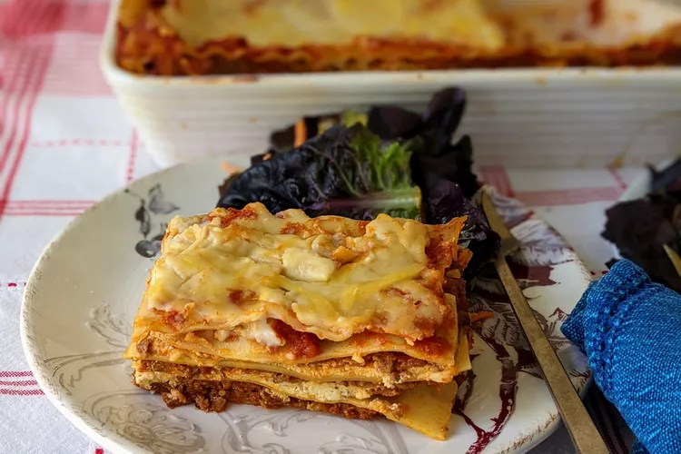

Lasanga Recipe

Lasanga is a casserole dish thing of pasta and cheese. It's layed, kind of like Shrek. It's cooked in the oven, so it's nice and melty. It should be rich, creamy, and most importantly, tasty.
Making it is a laboreous process. However, with proper preparations, you merely need to go through the motion of assembling the dish.
Ingredients
- 1/2 lbs ground pork
- 1/2 lbs ground beef
- 1/2 cup minced onion
- 1 (28 oz) can crushed tomatoes
- 1 (8 oz) can tomato sauce
- 2 tbsp chopped parsely
- 1 clove garlic
- 1 1/2 tsp dried basil
- 1/2 tsp dried oregano
1 1/2 tsp salt
- 1/8 tsp white sugar
- 1 (16 oz) lasagna noods
- 1 lbs small-curd cottage cheese
- 3/4 cup frated paresam
- 3 large eggs
- 2 tsp more salt, listed salt twice idk
- 1/4 tsp ground black pepper
- 1 (16 oz) shredded mozzarella cheese
Steps
- Combine meat, into pan, cook until brown. Add onion, cook 'till translucent.
- Add crush tomato stuff, half of the parsely, garlic, basil, first salt, oregano, sugar. Cook for 30 minutes, stirring occasionally.
- In a separate pot, boil water and cook lasanga noods until tender. While you do this, preheat oven to 375F.
- Mix cottage cheese, parmesan, eggs, rest of the parely, rest of salt, peper.
- Assemble lasanga. Layer it in the following order.
- Sauce
- 2 layers of noods
- Cottage cheese mix
- Mozzarella
- Cover in foil. Yeet it into the oven for 30-40 minutes. Optionally, remove foil and bake for 5-10 more minutes for a golden-brown top.
- Let cooldown for 10 minutes until serving.
- Enjoy